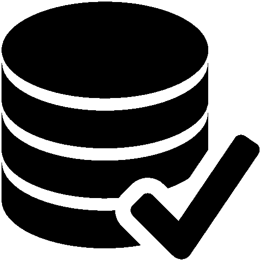

Sobre mim
Me chamo Camila, tenho 25 anos e gosto muito de estudar e trabalhar com dados, transformando-os em informações valiosas que podem orientar tomadas de decisões e criar impacto positivo.
No meu tempo livre gosto de ver minhas séries favoritas, brincar muito com minhas gatinhas e também sou amante da boa prática de exercícios, frequento academia (sempre que possível) e amo explorar a natureza em passeios relaxantes.
Formação

Estou em transição de carreira para o setor de tecnologia, com foco em análise de dados e inteligência de mercado. Atualmente, estou cursando o segundo período do curso de Ciência de Dados, onde desenvolvo competências essenciais, como:
- Criação e manipulação de bases de dados;
- Análise de dados;
- Programação em Python;
- Consultas SQL.
Para complementar minha formação, estou realizando um curso especializado em Power BI, pois acredito que não basta apenas produzir boas análises se não criarmos bons gráficos (Afinal, uma imagem vale mais do que mil palavras, não é mesmo?)
Projetos
Dashboard Analítico de Vendas Globais
Este projeto foca na análise dos dados de vendas de uma empresa fictícia. Com essa análise pudemos observar que o setor de suprimentos é o que mais gera vendas.

Dashboard Logística
Este projeto foca na análise dos dados logísticos de uma empresa fictícia, os dados nos informam o total de entregas realizadas no período, podemos observer que a maior parte das entragas foram realizadas antecipadamente e que a equipe do norte lidera em quantidade de entrega.